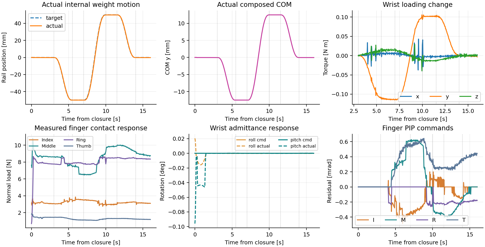

Contact-aware grasping under hidden load shifts.
DynamicDex combines global wrist loading with local tactile history and bounded 16-joint residuals.
Watch demos ↓Read paper
Key result
The same visible object and total mass can require different finger support when a hidden payload moves.
Simulation demos
Four common-Home recordings with direct video controls. The recordings are presentation traces separate from the formal 1,395-trial matrix.

One policy, two sensing scales.
Wrist wrench gives the resultant load. Four local tactile descriptors indicate contact changes. DynamicDex fuses them over an eight-frame history and projects the residual through reference, joint-limit, and rate bounds.
- Global wrist-load encoder
- Shared per-finger tactile encoder
- Recurrent bounded residual actor
- Privileged critic only during training
Four-case tactile replays
Every self-contained viewer has a play button and time slider. RGB, four tactile panels, payload/CoM state, phase, and wrench values update packet by packet.



Tactile images are optical marker/deformation overlays, not calibrated force maps.
Real-world Basket
DynamicDex Full-16 with wrist admittance: 10 static-load and 5 moving-load trials.
| Condition | Success | Mean retention | Mean peak rotation |
|---|---|---|---|
| Static (N=10) | 9/10 · 90% | 95.0% | 4.2° |
| Moving (N=5) | 4/5 · 80% | 85.0% | 8.6° |
Independent captures: tool-frame y-axis torque −0.620, −1.054, −1.146 N·m across initial, loaded, and shifted-load states.

Paper and data
The paper is authoritative for definitions and formal results.